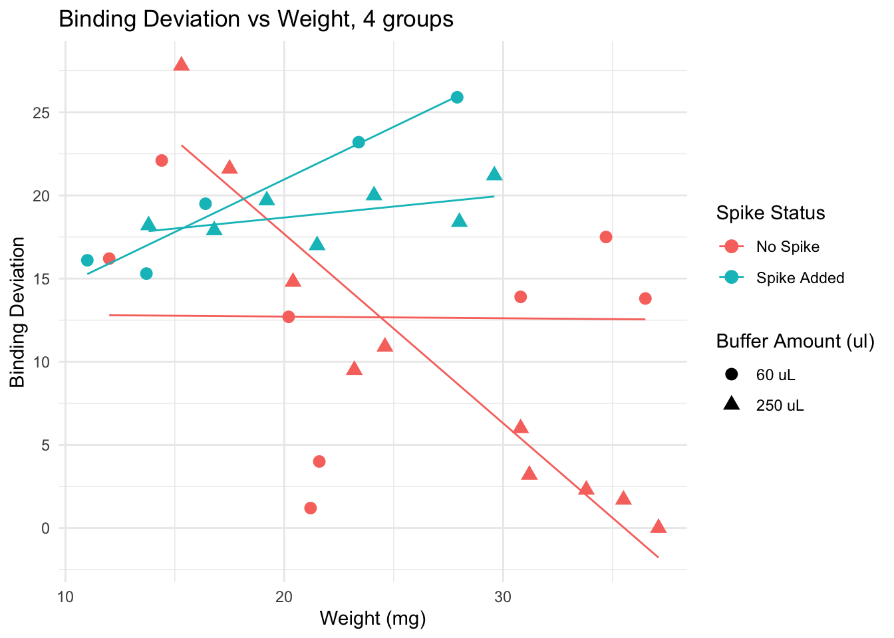
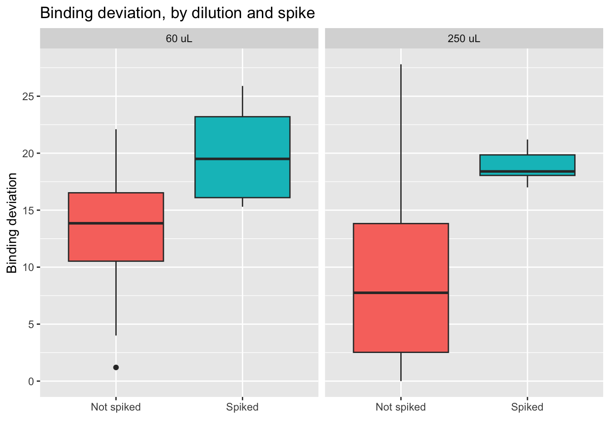

Results
Paloma
2024-10-16
Last updated: 2025-01-30
Checks: 7 0
Knit directory:
HairCort-Evaluation-Nist2020/
This reproducible R Markdown analysis was created with workflowr (version 1.7.1). The Checks tab describes the reproducibility checks that were applied when the results were created. The Past versions tab lists the development history.
Great! Since the R Markdown file has been committed to the Git repository, you know the exact version of the code that produced these results.
Great job! The global environment was empty. Objects defined in the global environment can affect the analysis in your R Markdown file in unknown ways. For reproduciblity it’s best to always run the code in an empty environment.
The command set.seed(20241016) was run prior to running
the code in the R Markdown file. Setting a seed ensures that any results
that rely on randomness, e.g. subsampling or permutations, are
reproducible.
Great job! Recording the operating system, R version, and package versions is critical for reproducibility.
Nice! There were no cached chunks for this analysis, so you can be confident that you successfully produced the results during this run.
Great job! Using relative paths to the files within your workflowr project makes it easier to run your code on other machines.
Great! You are using Git for version control. Tracking code development and connecting the code version to the results is critical for reproducibility.
The results in this page were generated with repository version e3f35cb. See the Past versions tab to see a history of the changes made to the R Markdown and HTML files.
Note that you need to be careful to ensure that all relevant files for
the analysis have been committed to Git prior to generating the results
(you can use wflow_publish or
wflow_git_commit). workflowr only checks the R Markdown
file, but you know if there are other scripts or data files that it
depends on. Below is the status of the Git repository when the results
were generated:
Ignored files:
Ignored: .DS_Store
Ignored: .RData
Ignored: .Rhistory
Ignored: data/.DS_Store
Note that any generated files, e.g. HTML, png, CSS, etc., are not included in this status report because it is ok for generated content to have uncommitted changes.
These are the previous versions of the repository in which changes were
made to the R Markdown (analysis/Results.Rmd) and HTML
(docs/Results.html) files. If you’ve configured a remote
Git repository (see ?wflow_git_remote), click on the
hyperlinks in the table below to view the files as they were in that
past version.
| File | Version | Author | Date | Message |
|---|---|---|---|---|
| Rmd | e3f35cb | Paloma | 2025-01-30 | wip |
| html | e3f35cb | Paloma | 2025-01-30 | wip |
| Rmd | e9a8f2c | Paloma | 2025-01-30 | update metric units |
| html | e9a8f2c | Paloma | 2025-01-30 | update metric units |
| Rmd | d314be6 | Paloma | 2025-01-29 | updates |
| html | d314be6 | Paloma | 2025-01-29 | updates |
| html | 76f7f11 | Paloma | 2024-11-11 | afd |
| Rmd | 8c54674 | Paloma | 2024-11-11 | upodaptes |
| html | 8c54674 | Paloma | 2024-11-11 | upodaptes |
| Rmd | dbfcd66 | Paloma | 2024-11-11 | wflow_rename("./analysis/ELISA_visualizations.Rmd", to = "./analysis/Results.Rmd") |
| html | dbfcd66 | Paloma | 2024-11-11 | wflow_rename("./analysis/ELISA_visualizations.Rmd", to = "./analysis/Results.Rmd") |
Introduction
Here I use QCed results from an ELISA plate. All hair samples were obtained from the same person. I tested 3 variables:
dilution (60 uL vs 250 uL, coded as 0 and 1, respectively)
weight (11 to 37.1 mg)
spike (25 uL stock solution (1:10) added to some wells, coded as 0 and 1, meaning not-spiked and spiked)
I removed the samples that have a Coef of variation higher than 15%.
Summary of results
The figures below were used to decide that the optimal parameters are:
- Weight higher than 20, ideally. Binding deviation goes down with higher weight.
- Dilution between 60 and 250 ul (higher dilution provides lower coef. of variation, more lower dilutions locate samples closer to 50% binding. An intermedieate value would be best)
- Spike Non-spiked samples provide lower binding deviation from 50% (i.e. measures are close to falling outside the curve)
data <- read.csv("./data/Data_QC_filtered.csv")
# Scatter plot of Binding Percentage vs Weight
ggplot(data, aes(x = Weight_mg,
y = Binding.Perc,
shape = factor(Buffer_nl))) +
geom_point(size = 3, color = "turquoise3") +
geom_smooth(method = "lm", se = FALSE, linewidth = 0.4, color = "orange3") + # Add a trend line
geom_hline(yintercept = 50, linetype = "dashed",
color = "gray", linewidth = 1) + # Add horizontal line
labs(title = "Results separated by spiked/non-spiked",
x = "Weight (mg)", y = "Binding Percentage",
shape = "Buffer Amount (ul)") +
scale_y_continuous(n.breaks = 10) +
scale_shape_discrete(labels = c("60 uL", "250 uL")) +
facet_grid( ~ Spike, labeller = as_labeller(c("0" = "Not spiked", "1" = "Spiked"))) +
theme_minimal()
Here we see the effect of the spike more clearly: adding a spike may not be necessary unless we have very small samples.
The following plots were made considering that having a binding of 50% is ideal. Data points that are over 80% or under 20% are not within the curve, and predictions are less accurate.
Binding percentages
Binding percentage by different variables
# Scatter plot of Binding Percentage vs Weight, 4 groups
ggplot(data, aes(x = Weight_mg,
y = Binding.Perc,
color = factor(Spike),
shape = factor(Buffer_nl))) +
geom_point(size = 3) +
geom_smooth(method = "lm", se = FALSE, linewidth = 0.5) + # Add a trend line
geom_hline(yintercept = 50, linetype = "dashed",
color = "gray", linewidth = 1) + # Add horizontal line
labs(title = "Binding Percentage vs Weight, 4 groups",
x = "Weight (mg)",
y = "Binding Percentage",
color = "Spike Status",
shape = "Buffer Amount (ul)") +
scale_y_continuous(n.breaks = 10) +
theme_minimal() +
# Change the labels in the legend using labs
scale_color_discrete(labels = c("No Spike", "Spike Added")) + # Change color legend labels
scale_shape_discrete(labels = c("60 uL", "250 uL")) 
Spiked samples (turquoise) have lower binding, because they have higher levels of cortisol than non spiked (pink) samples.
Dilution: effect is less clear. We see samples with both 60 uL and 250 uL binding at very high and very low levels.
Trends: within non-spiked samples with a similar weight and diluted at 60uL (pink circles), we do not obtain consistent binding percentages. However, non-spiked samples with similar weights do obtain similar bindings, and the lines are in the expected direction (higher weight, lower binding), except by a few outliers that would be removed from the analysis anyway (for having binding over 80%)
Conclusion: samples across different weights, non-spiked, and diluted in 250 uL buffer seem to provide the best results, particularly if samples weigh more than 15 mg. Using less than that may be risky, and in those cases, it may be better to use less buffer to concentrate the samples a bit more.
Coef. of variation percentage
The coefficient of variation or CV is a standardized measure of the difference between duplicates (same sample, same weight, same dilution, same everything). Some variables may make duplicates more variable, so this is what will be tested below.
Coef. of variation by group
Conclusion diluting the sample less seems to lead to higher differences between duplicates, which is something we want to avoid. We also see less variation for the group of spiked samples, with the lowest average of the four groups. Yet, we also must note that the spiked, 250 uL group has only 6 samples, as we see on the table below.
| Dilution: | No spike | Spiked |
|---|---|---|
| 60 uL | 7 | 7 |
| 250 uL | 12 | 6 |
| Total: 32 samples | ||
Coef. of variation by different variables
Lower CV is seen in spiked + 250 uL group, particularly for samples with low weight. Yet, non spiked, diluted in 250uL samples have very low CV if weight is over 30.
Deviation from 50% binding
Here I calculate a “binding” deviation score, to have a better idea of the “distance” between the values obtained and what I should aim for: 50% binding. Here an example of how this score works:
| Sample | Binding.Perc | Binding_deviation | |
|---|---|---|---|
| 20 | 32 | 50.0 | 0.0 |
| 19 | 31 | 51.2 | 1.2 |
| 22 | 34 | 51.7 | 1.7 |
| 21 | 33 | 52.3 | 2.3 |
| 23 | 36 | 53.2 | 3.2 |
| 14 | 27 | 46.0 | 4.0 |

This plot suggests that for samples of weight lower than 20 mg, adding a spike lowers the binding deviation. This effect is lost if samples are heaver than 20 mg.

We observe that spiked samples have a higher deviation from the ideal binding. We also observe that having larger samples leads to values closer to 50%. It is interesting to see that error does not go below 15% if we look at samples with weight under 20mg. Yet, we know that a deviation of up to 30% is acceptable.

Here we see how the lowest (best) scores are obtained by the non-spiked groups. Even better results are obtained if the dilution is 250 uL.
- Conclusion: using a 250 uL dilution, without spikes, will lead to better results that fall in the middle of the curve, and allow for more precise calculations of cortisol concentration.
Analysis: linear models
To explore the effects of each variable more systematically, I run multiple models and compared them using AIC Akakikes’ coefficient. I removed samples with a binding over 80% or under 20%.

| Version | Author | Date |
|---|---|---|
| dbfcd66 | Paloma | 2024-11-11 |
First, I looked at the distribution of the data (binding percentage). I am not sure how to describe it, but it does not look very linear. I will test different distributions at another time, but for now, I will run and compare simple models that should allow me to understand which variables have a greater impact on binding percentages.
#Work in progress after this line ______________________
sessionInfo()R version 4.4.2 (2024-10-31)
Platform: aarch64-apple-darwin20
Running under: macOS Sequoia 15.2
Matrix products: default
BLAS: /Library/Frameworks/R.framework/Versions/4.4-arm64/Resources/lib/libRblas.0.dylib
LAPACK: /Library/Frameworks/R.framework/Versions/4.4-arm64/Resources/lib/libRlapack.dylib; LAPACK version 3.12.0
locale:
[1] en_US.UTF-8/en_US.UTF-8/en_US.UTF-8/C/en_US.UTF-8/en_US.UTF-8
time zone: America/Detroit
tzcode source: internal
attached base packages:
[1] stats4 stats graphics grDevices utils datasets methods
[8] base
other attached packages:
[1] bbmle_1.0.25.1 arm_1.14-4 lme4_1.1-36 Matrix_1.7-1
[5] MASS_7.3-61 coefplot_1.2.8 RColorBrewer_1.1-3 ggplot2_3.5.1
[9] knitr_1.49 dplyr_1.1.4
loaded via a namespace (and not attached):
[1] gtable_0.3.6 xfun_0.49 bslib_0.8.0
[4] lattice_0.22-6 numDeriv_2016.8-1.1 vctrs_0.6.5
[7] tools_4.4.2 Rdpack_2.6.2 generics_0.1.3
[10] tibble_3.2.1 fansi_1.0.6 pkgconfig_2.0.3
[13] lifecycle_1.0.4 farver_2.1.2 compiler_4.4.2
[16] stringr_1.5.1 git2r_0.35.0 munsell_0.5.1
[19] httpuv_1.6.15 htmltools_0.5.8.1 sass_0.4.9
[22] yaml_2.3.10 later_1.3.2 pillar_1.9.0
[25] nloptr_2.1.1 jquerylib_0.1.4 whisker_0.4.1
[28] cachem_1.1.0 reformulas_0.4.0 boot_1.3-31
[31] abind_1.4-8 useful_1.2.6.1 nlme_3.1-166
[34] bdsmatrix_1.3-7 tidyselect_1.2.1 digest_0.6.37
[37] mvtnorm_1.3-2 stringi_1.8.4 reshape2_1.4.4
[40] labeling_0.4.3 splines_4.4.2 rprojroot_2.0.4
[43] fastmap_1.2.0 grid_4.4.2 colorspace_2.1-1
[46] cli_3.6.3 magrittr_2.0.3 utf8_1.2.4
[49] withr_3.0.2 scales_1.3.0 promises_1.3.0
[52] rmarkdown_2.29 workflowr_1.7.1 coda_0.19-4.1
[55] evaluate_1.0.1 rbibutils_2.3 mgcv_1.9-1
[58] rlang_1.1.4 Rcpp_1.0.13-1 glue_1.8.0
[61] rstudioapi_0.17.1 minqa_1.2.8 jsonlite_1.8.9
[64] R6_2.5.1 plyr_1.8.9 fs_1.6.5